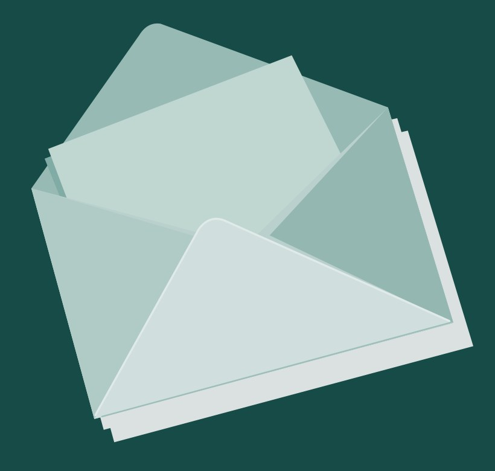
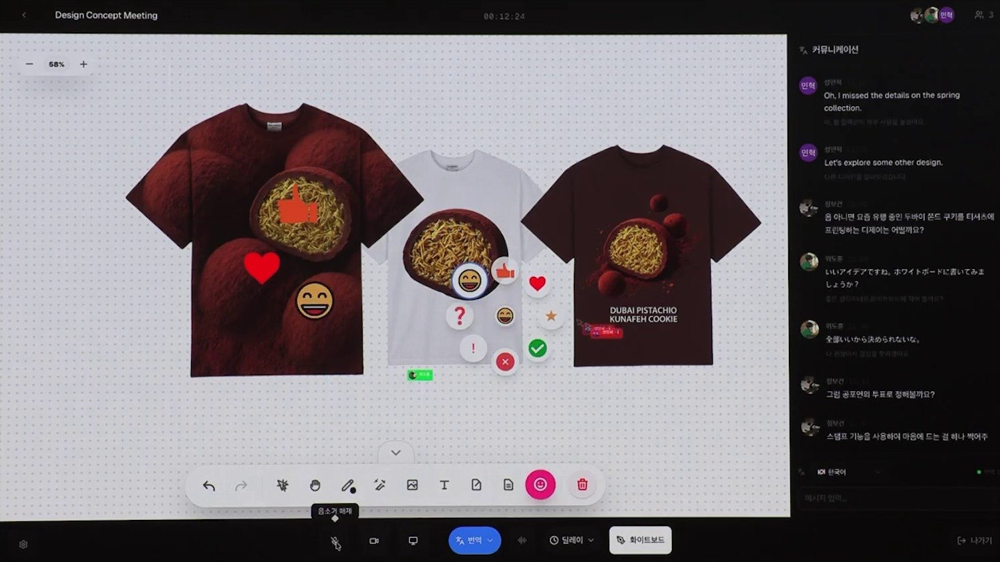
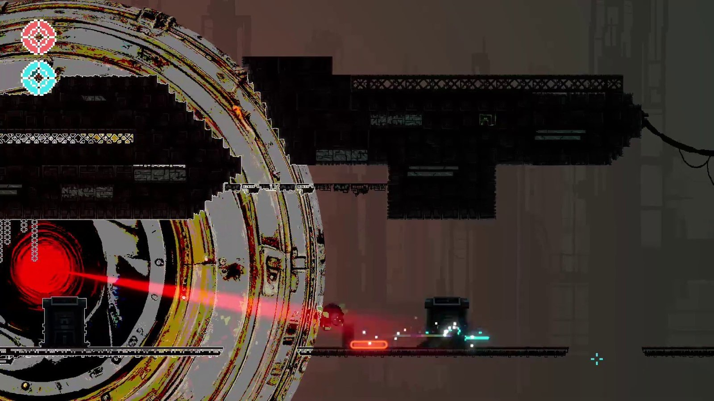

2026.09 – 현재 · AX Engineer Intern
MOAI
사내 AI 업무 자동화
- 발견한 문제
- 영업 담당자가 메일 한 통을 쓰기 전에 흩어진 자료를 다시 찾음
- 해결과 결과
- AI가 후보와 근거, 초안을 준비하고 담당자가 승인하는 메일 도구. 영업팀이 실제 발송에 사용. 사내 도구 넷을 더 만듦

Problem Solver
AX · AI Native
문제를 발견하고 필요한 기술로 해결합니다
게임을 만들며 시작했습니다. 지금은 AI가 쓰이는 제품을 만듭니다. MOAI에서 AX Engineer Intern으로 사내 AI 업무 도구를 만들고 BeeRFriend의 CPO로 AI 컴패니언 서비스 VFriend를 만듭니다.
2026.09 – 현재 · AX Engineer Intern
사내 AI 업무 자동화

2026.10 – 현재 · BeeRFriend CPO
AI 컴패니언 서비스

2025.12 – 2026.01 · 크래프톤 정글 5인 팀
AI 네이티브 협업 워크스페이스

2026.11 · Unity AI Game Jam 4인 팀
AI 네이티브로 만든 2인 협동 게임

2026.07 – 09 · 맵 제작에 팀원 참여
AI 네이티브 게임 개발 워크플로우

2026.09 · KOSSCCHTHON 2026 5인 팀
AI 네이티브 + 애자일 워크플로우

| 2026.10 – 현재 | BeeRFriend · CPO | 3인 창업 · 제품, 개발, 사업 구상 |
|---|---|---|
| 2026.09 – 현재 | MOAI · AX Engineer Intern | 사내 AI 업무 도구 개발 |
| 2026.04 – 08 | 숭실평화통일 연구원 · SmartAI Lab | 학부연구생 |
| 2026.03 – 현재 | 숭실대학교 AI소프트웨어학부 | 1학년 재학 |
| 2025.09 – 2026.01 | 크래프톤 정글 SW-AI Lab 11기 | 협업 서비스 EUM 팀 프로젝트 |
| 2023.03 – 2026.02 | 한국게임과학고등학교 | 컴퓨터게임개발과 수석 졸업 |
| 2026.11 | Unity AI Game Jam | ‘AI는 거들 뿐상’ · 팀 수상 |
|---|---|---|
| 2026.09 | KOSSCCHTHON 2026 | 대상 · 팀 수상 |
| 웹·서버 | Next.js · Node.js · NestJS · FastAPI · PostgreSQL | |
| 실시간·그래픽 | WebSocket · Socket.IO · PixiJS | |
| 게임 | Unity 6 | |
| AI 개발 도구 | Claude Code · Codex CLI · MCP | |
| 프로젝트 | 기간 | 만든 것 | 맡은 일 |
|---|---|---|---|
| 겜마루 웹 · 데일리 브리프 | 2026.09 – 10 | 동아리 소개와 작품 아카이브, 보고서 구독 | 아카이브와 계정 흐름, Discord 알림 |
| Abstraction Bot | 2026.08 | Discord 대화를 요약해 Notion에 정리하는 도구 | 에이전트 연동과 배포, 웹 콘솔 |
| 무인 스크린골프 CMS | 2026.08 | 매장 운영과 예약, 정산을 다루는 관리자 웹 | 정산과 거래 대조, 운영 작업 자동화 |
| PaperBridge | 2026.08 – 09 | 논문 읽기와 AI 질의를 잇는 연구 워크스페이스 | 백엔드 동시 처리, AI 계정 연결, 읽기 화면 개선 |
| HELIX | 2026.05 – 06 | 여러 LLM의 토론과 검증을 조율하는 플랫폼 | 개인 프로젝트 · 서비스 계층과 프런트엔드, 배포 |
| 평성시 사회 시뮬레이션 | 2026.04 – 08 | SmartAI Lab의 에이전트 사회 시뮬레이션 | 시뮬레이션 라이브러리 초기 구현 |
| Triniacle | 2026.03 – 06 | 5인 팀의 2D 탑다운 액션 RPG | 팀 리더 · 튜토리얼, 전투 스킬, 몬스터 AI 구현 |
| Spell Thrower | 2026.08 | 게임잼에서 만든 카드 전투 게임 | 멀티플레이 시스템과 덱 구성 UI |
2026년 두 학기 4,722개 분반을 학기·학과별로 선택할 수 있게 했습니다. 시간이 미등록된 108개 분반은 목록에 남기고 추천에서 제외했습니다.
지원자가 이력서와 포트폴리오를 각각 링크나 파일로 낼 수 있게 지원서를 개편했습니다. 자료가 빠지면 제출 전에 해당 입력란에 표시합니다.